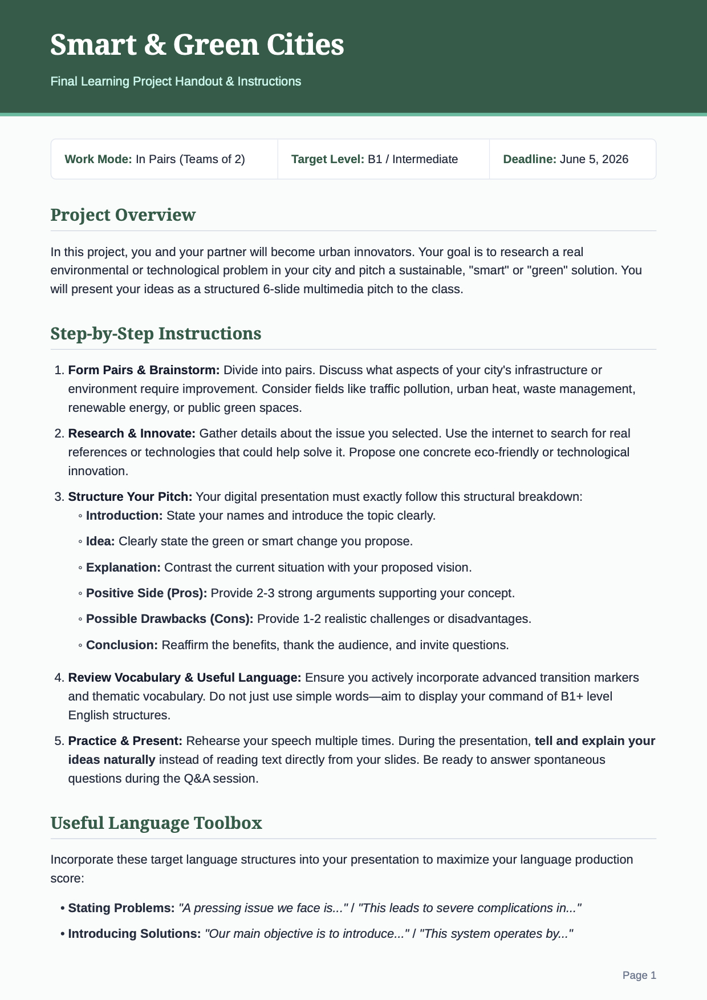
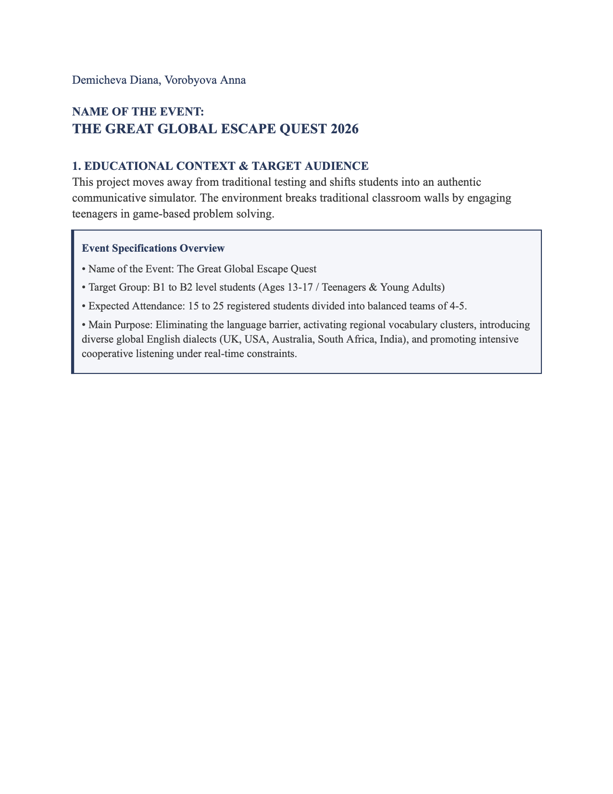

Executive Summary
This portfolio serves as a comprehensive record of my development as an English language teacher, offering insight into my growing expertise, pedagogical skills, and dedication to fostering meaningful learning experiences for students of all ages and proficiency levels.
The portfolio brings together reflective essays, language analyses, self-designed projects, learner profiles, language practice tasks, presentation materials, and lesson plans. Together, these documents illustrate my analytical approach to language teaching, my creativity in designing engaging tasks, and my ability to adapt methods to diverse learners—from school students preparing for state exams to adults pursuing conversational, academic, or business English.
Above all, this collection reflects my ongoing commitment to professional growth and my passion for creating a supportive, rich learning environment where students feel motivated to achieve their goals.
Reflective Essay
Grammar Language Analysis
Vocabulary Language Analysis
Self-Designed Learning Project
Learning Project Handout

Download Image ↓Self-Designed Extra-Curriculum Event

Download Image ↓